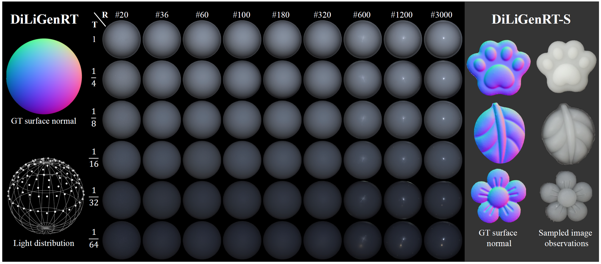
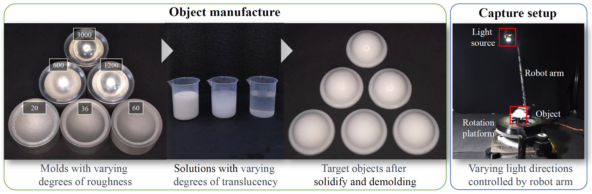
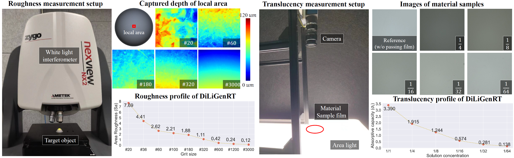
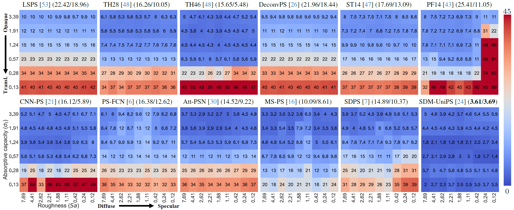
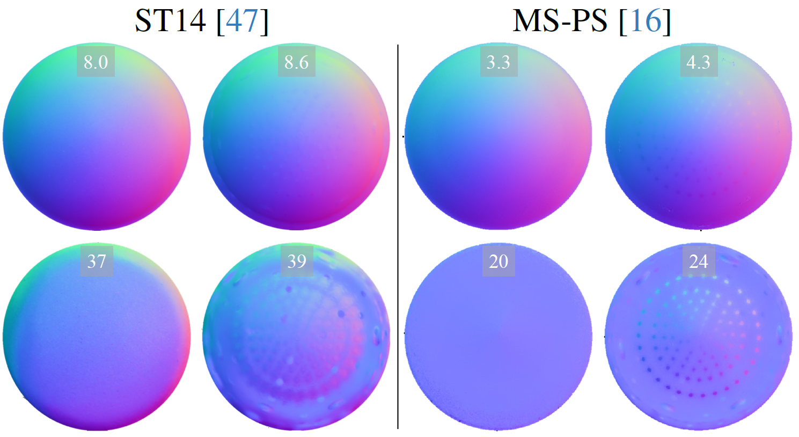
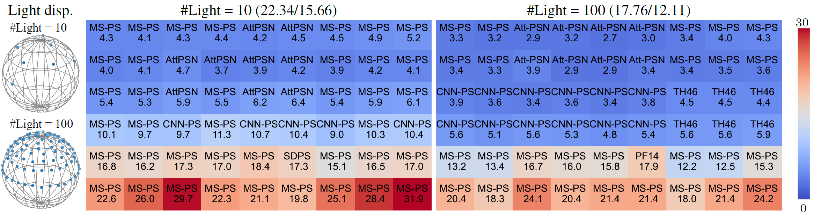

DiLiGent-RT: A Photometric Stereo Dataset with Quantified
Roughness and Translucency
CVPR 2024 (Poster Presentation)
- Heng Guo 1,†
- Jieji Ren 2,†
- Feishi Wang 3,4,†
- Boxin Shi 3,4,‡
- Mingjun Ren 2,‡
- Yasuyuki Matsushita 5,‡
- 1School of Artificial Intelligence, Beijing University of Posts and Telecommunications
- 2School of Mechanical Engineering, Shanghai Jiao Tong University
- 3National Key Laboratory for Multimedia Information Processing, School of Computer Science, Peking University
- 4National Engineering Research Center of Visual Technology, School of Computer Science, Peking University
- 5Graduate School of Information Science and Technology, Osaka University
Overview
Photometric stereo faces challenges from non-Lambertian reflectance in real-world scenarios. Systematically measuring the reliability of photometric stereo methods in handling such complex reflectance necessitates a real-world dataset with quantitatively controlled reflectances. This paper introduces DiLiGenRT, the first real-world dataset for evaluating photometric stereo methods under quantified reflectances by manufacturing 54 hemispheres with varying degrees of two reflectance properties: Roughness and Translucency. Unlike qualitative and semantic labels, such as diffuse and specular, that have been used in previous datasets, our quantified dataset allows comprehensive and systematic benchmark evaluations. In addition, it facilitates selecting best-fit photometric stereo methods based on the quantitative reflectance properties.
Highlights
- First public quantified Roughness and Translucency PS dataset with 54 sets of images with `ground truth` normal;
- Quantitative controlled surface rougness (9 levels) and intrisic translucency (6 levels) with large span;
- A simple and stable process is developed to fabricate diverse surface roughness and tranlucency for samples with consistency;
- A effective translucency measurement appraoch is developed;
- Evaluating details recovery performance of PS methods and identifing new open problems.
Febrication, Capture and `RT` Measurement

We manufacturing multiple molds with same size, and sandblasting and polish them with differen grit # (the size of granularity) to obtain diverse surface rougness. For translucecy, we mix different concentrations of pigment into silica gel to casting the molds to obtain hemi-spheres. We also take the lightweight illumination and imaging setup for capture the DiLiGenT-RT dataset. We take zygo nexViewTM NX2 to measure the accurate surface roughness of objects, and build a customerized equipment to measurement the translucency of objects.
Benchmark Results
12 typical algorithms are evaluated on proposed DiLiGenTRT, and their error distribution matrix is visualized. More rough and less translucent samples show small reconstruction error (same as common sense).
Performance Analysis
Visualization of estimated surface normals for hemisphere objects at the four corners of the translucency-roughness (top-left:most rough and least translucent, top-right: least rough and least translucent, bottom-left: most rough and most translucent, bottom-right: least rough and most translucent), which directly demonstrate the influence of roughness of translucency on surface normal estimation.
Benchmark evaluation on DiLiGenRT under sparse and dense lights (#10 and #100), which records the best-performing algorithms on each roughness-translucency sample (MAE/name annotated in the heatmap block), and the change on the number of lights.
Citataion
@InProceedings{Guo_Ren_Wang_2024_CVPR, author = {Guo, Heng and Ren, Jieji and Wang, Feishi and Ren, Mingjun and Shi, Boxin and Yasuyuki, Matsushita}, title = {DiLiGenRT: A Photometric Stereo Dataset with Quantifed Roughness and Translucency}, booktitle = {Proceedings of the IEEE/CVF Computer Vision and Pattern Recongnition (CVPR)}, month = {June}, year = {2024}, pages = {xxxxx-xxxxx} }
Contact
Any questions and further discussion, please send e-mail to:
guoheng_AT_bupt_DOT_edu_DOT_cn.